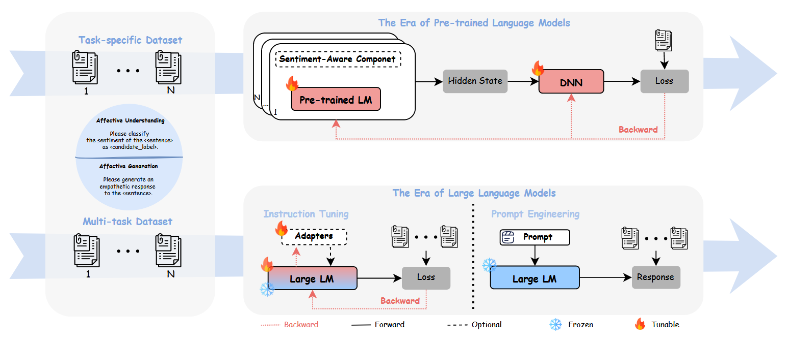
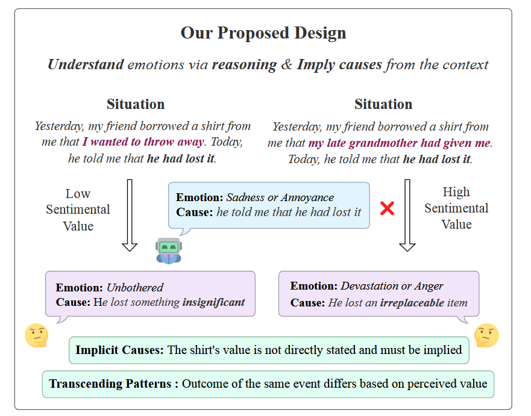

今天在实验室出人意料地把活干完了，于是抓紧让 Gemini 调研了一堆情感计算（Affective Compute）的论文，饶有兴趣地了解起这个我或许会感兴趣的方向。
Introduce：历史视角下的情感计算
LLM 是一个迭代很快的领域，所以 25 年年初之前的论文其实都可以归类于 “历史视角” 的范畴了。这里以综述 Affective Computing in the Era of Large Language Models: A Survey from the NLP Perspective 为例，讲几个比较基础的点。
1.1 Background of AC
情感计算（AC）包括两个主流任务，即情感理解（AU）和情感生成（AG）。
针对情感理解任务，微调预训练语言模型 （PLM） 已经取得了相当大的成功。然而，这些模型缺乏泛化能力，需要专门的模型来处理特定任务。此外，传统 PLM 在 AG 中面临挑战，特别是在生成多样化且情感丰富的响应方面。
而 ChatGPT 系列和 LLaMA 模型等大语言模型 （LLM） 的出现带来了新的机遇和挑战，催化了 AC 的范式转变。大模型拥有上下文学习、常识推理和高级序列生成的能力，借助指令微调和提示工程（即 Prompt 方法）就能取得不错的结果。对于指令调优，我们讨论了全参微调和参数高效微调（PEFT）的方法（如 LoRA）。在提示工程中，我们研究了 AU 和 AG 的零样本、少量、思维链 （CoT） 和 Agent-Based 方法。
最后，我们总结了现有的基准和评估方法，并从 NLP 的角度讨论了 AG 现有挑战，例如伦理考虑和有效评估。

1.2 情感计算任务
情感理解 有很多传统任务，比如极性分类（2 分类）和情感分类（n 分类）。除了对情绪标签的分析以外，还涉及了情绪强度的量化，即情绪强度检测（EID）。私以为这些方向均属于 PLM-solved 了，没啥研究价值。
此外，考虑到人类情感并不总是在文本中明确表达，研究人员提出了内隐情感分析（ISA）的任务，旨在识别和分析文本中未通过明确情感词汇或表达传达的隐含情感。当然，情感也可以通过文本以外的模态进行传递，因此引入了多模态情感分析（MSA）任务，该任务整合了文本、视觉和听觉信息。这个或许还是有价值的。
仅仅是分类（Classification）可能对情感的理解不够深刻，因此借助自然语言文本分析是有必要的。主观文本分析 （STA） 可更深入地了解用户体验和观点的细微差别。STA涵盖了多种任务，如人格评估[86]、自杀倾向检测[87]、毒性检测、讽刺检测[88]、幸福感评估[89]。这些任务比较 specific，做起来可能 lack of generalization.
情感生成 的主要任务之一就是情感对话生成，旨在增强系统响应和 engage with emotion 的能力。一方面是对话应该具有同理心（Empathy），另一方面是需要有明显的情感倾向。这个方向和传统的 Dialogue Benchmark 还不太一样，有待后续调研。
1.3 情感计算方法
一句话，过去的过去都是在预训练模型（Bert, T5 之流）上全参微调，而过去（24年之前）是在 LLM 上用 prompt-based 或者 SFT/PEFT 做的。然而在一些特定的任务上，LLM 表现还不如 PLM. 我觉得这个要么是参数量不够大，要么是任务太 specific 了，SFT 学不到对应的能力，RL 来了全秒了。
1.4 情感计算 Benchmark
ESConv 是非常经典的 Benchmark，可以了解一下。其他的可以简单看下 EQ-Bench，EmoBench 之类的，以外的都是看论文用了什么 Benchmark 查漏补缺。IEMCOP 之流的就很古早了。整体来说，对于 AC 任务的有效评估手段还是缺乏的。
“探索如何训练一个能够有效感知情感和评估性能的 LLM 仍然至关重要。在训练专门用于 AC 任务的 LLM 时，研究人员面临的挑战不仅要保留模型的原始能力，如指令理解和推理，还要加强新的能力，比如情感感知（perception）和认知（cognitive）。在评估方面，在 LLM 出现之前进行的研究提出了各种衡量模型性能的指标，例如 Accuracy、BLEU 和 ROUGE。然而，这些指标不足以充分评估 LLM 的能力。建立全面有效的评估标准仍然是一个亟待解决的问题。”
Towards Emotional Support Dialog Systems (Datasets)
由于缺乏精心设计的任务和有效的情感支持对话语料库，将情感支持构建到对话系统中的研究稀缺。这篇论文有如下几个贡献点：1）定义了情感支持对话任务；2）构建了一个具有丰富注释（尤其是支持策略）的对话数据集（ESConv）；3）我们评估了最先进的对话模型提供情感支持的能力。（虽然都是 PLM）
Without further Exploration，Supporter 不太可能理解 Help-seeker 的经历和感受，因此，如果 Supporter 在没有深入了解的情况下给出不相关的建议，例如“你可以去散步放松一下”，这可能是冒犯性的，甚至是有害的。在了解 Help-seeker 的情况时， Supporter 可能会表达理解和同理心，通过各种技巧（例如自我表露、反思感受等）来缓解 Help-seeker 的挫败感。
在了解 Help-seeker 的问题后， Supporter 可能会提出建议，帮助 Help-seeker 解决问题。如果 Supporter 只是安慰 Help-seeker ，而没有任何改变行动的建议，那么 Supporter 可能无法有效地帮助情绪改善。最后，在这个示例对话的数据收集过程中， Help-seeker 报告说他们的情绪强度从 5 下降到 2（情绪强度在我们的语料库中被标记），这表明 Supporter 提供的 Emotion Support 的有效性。
- ESC 框架提出了三个阶段（探索、安慰和行动），每个阶段包含多种支持策略（或技能）。我们将 ESC 框架建立在希尔的 帮助技能理论 的基础上，并使其更适合对话系统设置，旨在通过社交互动（如同龄人、朋友或家人之间的互动）提供支持，而不仅仅是专业咨询。
- 情感支持旨在减少用户的情绪困扰，并帮助他们克服这些挑战，因此 Help-seeker 会首先标注一个情感强度，通过对话使情感强度降低。Supporter 会采用不同的策略（如提问、情感反射、自我暴露等，都挺心理学的）。
- 最后总共收集到了1,053 条对话数据。实验是在
dialogGPT和BlenderBot两个 PLM 上做 SFT，要求 PLM 在生成 response 前，先选择一个策略，再生成对应策略下的 response. 感觉数据有点年代感了，固定策略的 Response 也缺乏自由度。
EmoBench: Evaluating the Emotional Intelligence of Large Language Models
现有的针对情感智能 (EI) 系统的研究主要集中于传统的情绪识别，忽视了情绪调节和通过情绪理解促进推理等关键 EI 能力。EmoBench 是一个基于成熟心理学理论的全面EI基准测试，包含情感理解和情感应用的400个精心设计的问题，旨在通过更全面和具有挑战性的基准测试，推动LLMs在理解、推理和导航个体心理状态方面的能力。
如下图例子所示：物体的感知价值与人的情绪及其强度直接相关。这种作为情感原因的感知价值应该从上下文中隐含推理得到，而非直接从上下文提取。这也符合大模型的发展需求，需要有更难的 Benchmark 对大模型的 EI 能力进行测试。

我们评估 LLM 理解场景中个人情绪及其原因的能力 （EU）。我们还评估他们是否可以适当地应用这种理解 （EA） 来促进他们的思考和情绪管理，并在情绪困境中确定最有效的解决方案。我们的实验结果凸显了现有大模型与人类的 EI 能力之间存在相当大的差距，表现最好的大模型 （GPT-4） 达不到普通人的表现。非常 Make Sense.
在心理学中，情商评估主要分为特质和能力测量（Ashkanasy 和 Daus，2005）。特质测量通常通过自我报告问卷进行评估，旨在探索个人如何回应这些情绪化的场景，但作者认为这种 self-report assessment 不适合评估大模型。能力测量设计一套多项选择题以评价个人的情感理解和表现，并提供更理论化的情商观点。
We believe EI benchmarks should be comprehensive and transcend general patterns while necessitating deep reasoning and understanding.
我们最初提示 GPT-4（OpenAI，2023）生成示例场景，但很快发现这些数据缺少情感深度，包含了显式的情感标签。最后基于这些合成数据，邀请人类标注者手动设计具有情感挑战性的场景，并注释情绪标签和原因。鉴于这是视为一项主观任务，我们分配了原来的两名工人和两名新工人来注释每个 MCQ 并确定其标签。使用 Fleiss 的 Kappa（Fleiss 和 Cohen，1973）的注释者间一致性为 κ = 0.852），kappa 值到 0.85 属于非常高了。
他们测的模型都比较老，没有 25 年具有推理能力的模型，之后可以补测一下。或者看看今年的工作有没有涉及的。反正当年的模型没有回答得比人类好的，可以简单理解为大模型情商都没人类高（bushi
R1-Omni: Explainable Omni-Multimodal Emotion Recognition with Reinforcement Learning
简单看了下，就是纯蹭了一下 R1 的红利，把自己原来的工作套一个 RL 的壳硬 train 一发就拿出来了，没啥针对情感识别的特殊设计。因为之前的数据集也是 n 分类问题，所以还挺对齐的。唯一一个比较那什么的点就是做的特别早（3月），感觉在没有成熟框架之前把这个做出来也不容易。
AffectGPT-R1: Leveraging Reinforcement Learning for Open-Vocabulary Emotion Recognition
和上面一篇除了改了改奖励函数，其他都一样。哦还有 Cold Start (PEFT) 数据量更大一点。
Sentiment Agent as Judge
Social cognition is orthogonal to generic helpfulness.
这是 RLVER 框架的前置工作，大致意思就是给出自家评估模型情商能力的方法和指标。大致意思是先给每个 Agent（虽然很怀疑这是否究竟是 agent，还是 prompt-based workflow）给定一个详细的人物设定，对话主题，隐藏意图（即是想发泄情绪？还是想听建议？不同角色会带着不同期待展开对话），和背景故事（即对话场景）。
他们设计了 100 个场景的支持性对话 Benchmark，利用多轮对话的方式模拟情绪变化，测试 LLM 的高阶社交认知能力，并表明认知分数与既定的以人为本的工具和话语水平的同理心评级密切相关。
该框架贡献有两点：
- 核心是 Sentient Agent，它通过利用 LLM 推理来模拟类人的感受和认知，以可观察的上下文为基础，估计人的感受、情绪变化和下一步行动。基模就是 DS-V3.
- 搭建了一个开放式交互环境，由广泛的子场景组成，涵盖动态角色、对话背景、个人目标和任务构建等要素。在每个子场景中，agent 交互后的情绪作为评估指标。采用了心理学上的 Barrett-Lennard 关系量表 （BLRI） 分析用户内部想法。
Since emotions arise from many internal and external factors, the Sentient Agent must consider observable factors while adhering to its persona and goals for the emotion estimation.
怎么讲呢，Sentiment Agent as Judge 比起 LLM as Judge 来说，肯定是有提升的，搭建环境和任务也是一个可以自动化的框架，选取的指标也是有参考性的，为之后的 RL training 打好基础了。
RLVER: Reinforcement Learning with Verifiable Emotion Rewards for Empathetic Agents
公众号：https://mp.weixin.qq.com/s/4R4k4UdW5edN4P-S-IEFYw
这个工作是腾讯混元AI数字人团队做的，看上去还挺 solid，也比较符合于我对当前情感计算发展的认知：大型语言模型 （LLM） 擅长逻辑和算法推理，但它们的情商 （EQ） 仍然远远落后于其认知能力。虽然可验证奖励强化学习 （RLVR） 在其他领域取得了进展，但其在对话中的应用——尤其是情商——仍然没有得到充分探索。
因此，他们团队提出了 RLVER：一个端到端的强化学习框架，可以利用来自模拟用户的可验证情感奖励，培养 LLM 的高阶移情能力。在这个框架内，自洽情感模拟用户（Zhang et al.， 2025a）参与对话展开，并在对话过程中产生确定性情绪分数，作为指导大模型学习的奖励信号。使用 PPO 微调公开可用的 Qwen2.5-7B 模型，将其 Sentient-Benchmark 分数从 13.3 提高到 79.2，同时在很大程度上保留了数学和编码能力。
有几个 Key Findings：（ii） 思考模型和非思考模型表现出不同的趋势——思考模型在同理心和洞察力方面表现出色，而非思考模型则倾向于行动。（iii） GRPO 通常产生稳定的收益，而 PPO 可以将某些能力推向更高的上限。（iv） 在将 Agent 作为 RL 训练中的环境和奖励来源时，挑战的并不总是更好，温和的可以产生更强的结果。（v） RLVER 可以在社会认知空间中将模型行为从以解决方案为中心的风格转变为真正的移情风格。我们的研究结果表明，具有可验证情绪奖励的 RL 是通往情商和广泛能力的语言代理的实用途径。
基于 SAGE 这篇论文，RLVER 搭建了其 rollout 环境。在每次对话中，模拟用户在每次 LLM 响应后都会更新其情绪状态，并发出 的情绪分数作为奖励。这个情绪分数 is consistent & verifible: 每个都是通过基于用户角色、对话历史、对话上下文和目标的原则性推理步骤确定性地推导出来的。 通过扩展具有广泛用户行为和对话意图的模拟环境，我们减轻了因同质用户偏好而产生的奖励黑客攻击。
策略优化算法选择的是 PPO 算法，出于 ”safer exploration of diverse socialemotional strategies and smoother convergence"。值得一提的是他们没有采用 Qwen2.5-7B-Based，而是 Qwen2.5-7B-Instruct，因为他们认为从适度对齐的检查点进行初始化，使用通用对话数据进行预训练，可以建立更强的基线并加速收敛。只要 Instruct FT 阶段没有接受过情感相关的信号，就可以保证 reward-driven 优化，而非采用 pre-encoded 情感知识。
具体来看，RLVER 同样将 <think> 作为情感推理的重要环节，这和数学/代码/Tool-Use 等其他任务保持一致。并且同样采用了 format reward 去强化这种格式。违反这种输出将受到零奖励的惩罚。他们也测试了不包含这种推理模板下直接推理，做 RL training 的效果（对比实验），说明这种 format 在情感对话人物上同样也是有效的。
比较神奇的是，这篇工作的 Test Dataset 一个是在自家 Sentiment Benchmark 上做的（域内评估），结果显示 7B 模型实现了 13->79 的分数提升，和最强的专有模型（Gemini-2.5-Pro）保持在同一水准，说明 RL 增强大模型的共情推理能力是有说法的；并且思考模型比非思考模型表现更好，符合预期；并且对于 SFT 来说，获得这种共情能力很有可能会导致他在其他任务上出现灾难性遗忘，但是通过 RL Training 使得共情推理能力的专业化是在对一般能力影响最小的情况下实现的。
总结
几篇论文看下来，其实发现情感计算这个方向还是在健康发展的，不论是 Dataset、 Benchmark、还是 Training Method，一直都是有人在填补空缺，紧跟 LLM 时代潮流。但是说实话，也只是在跟随潮流出成果，大模型火了就试一试 Prompt-based Methods，试试 SFT，RL 火了就试一试 PPO/GRPO，之间应该有个小半年的“延迟”。
情感计算领域还有一个特点就是经常 Refer to 一些心理学理论，搞交叉。如果想搞情感计算这块儿，这或许也是之后需要补的知识？唉总之目前 AC 还是属于兴趣范畴，可以平常跟进一下这方面的工作，捉捉虫找不足。希望能在自己感兴趣的科研领域里面做点东西。
我觉得就像 RLVER 里面说的那样，人类智能 grounded in both IQ and EQ，让模型理解情感、甚至掌握情感表达的能力在将来的某一天也会变得同等重要。工程师专注于当下的需求，而科研从业者应该放眼于未来的需求，并将其变为现实，that’s what matters.